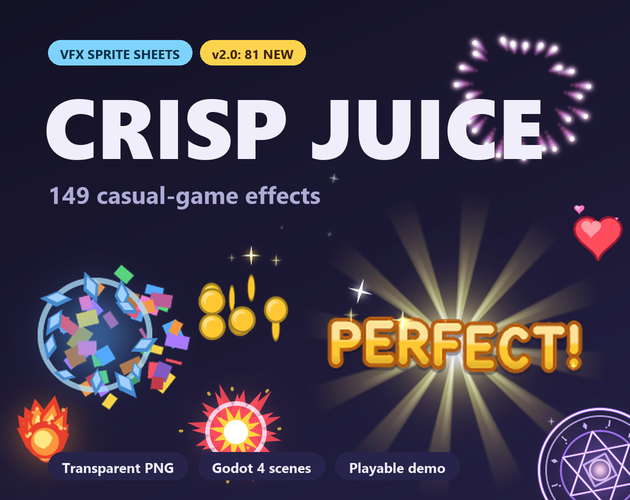

Crisp Juice: 68 VFX sprite sheets for casual and puzzle games
Crisp Juice is a pack of 68 sprite-sheet effects for casual and puzzle games: gem bursts, match pops, line blasts, coins, stars, confetti, fireworks, impacts, magic and highlight loops. The sheets are transparent PNGs with a sheets.json of frame data, plus a Godot 4 project with a ready-made scene for each effect.

- Contents
- 68 sprite-sheet effects in 6 folders
- Formats
- Transparent PNG sprite sheets, sheets.json, Godot 4 project
- Price
- $4.99 on itch.io (anipixels.itch.io/crisp-juice)
- Free sampler
- 8 effects, free on itch.io (anipixels.itch.io/crisp-juice-free)
- Licence
- Royalty-free for commercial and non-commercial projects, no credit required, no reselling or redistribution of the files
- Made by
- Anipixels, with procedural code written with an AI assistant (Claude)
What is included
- Gems (30) - gem burst red, gem burst orange, gem burst yellow, gem burst green, gem burst blue, gem burst purple, gem burst pink, gem burst white, match pop red, match pop orange, match pop yellow, match pop green, match pop blue, match pop purple, match pop pink, match pop white, line blast h yellow, line blast v yellow, line blast h blue, line blast v blue, line blast h pink, line blast v pink, bomb explosion fire, bomb explosion magic, lightning zap blue, lightning zap yellow, bubble pop blue, bubble pop green, bubble pop pink, bubble pop white
- Rewards (10) - star burst gold, star burst white, star burst pink, star burst blue, star collect, coin burst gold, coin burst silver, coin spin gold, coin spin silver, heart burst
- Celebration (7) - confetti burst x2, confetti fall loop, fireworks gold, fireworks pink, fireworks blue, fireworks green
- Impacts (8) - ring shockwave white, ring shockwave yellow, ring shockwave blue, ring shockwave pink, smoke puff white, smoke puff grey, dust land, tap ripple
- Magic (6) - magic swirl gold, magic swirl blue, magic swirl purple, sparkle twinkle white loop, sparkle twinkle gold loop, sparkle twinkle blue loop
- Highlights (7) - glow pulse yellow loop, glow pulse blue loop, glow pulse green loop, glow pulse pink loop, hint ring white loop, hint ring yellow loop, glint sweep
Details
- 68 sprite sheets in 6 folders. Frames run left to right, top to bottom, and every cell is square.
- Cell sizes: 192 px (55 sheets), 256 px (11 sheets) and 128 px (2 sheets). 12 to 48 frames per effect, drawn for 30 frames per second.
- Transparent PNG with straight (non-premultiplied) alpha.
- 12 sheets are flagged as loops in sheets.json and repeat seamlessly (the ten named _loop plus coin_spin_gold and coin_spin_silver); everything else plays once.
- 17 sheets (glows, sparkles, lightning, fireworks) are marked "additive": true in sheets.json: they look best with additive blending on dark backgrounds and also work with normal blending.
- confetti_fall_loop tiles vertically, line_blast_h tiles horizontally and line_blast_v vertically, so they can be repeated to cover any width or height.
- sheets.json lists frame count, cell size, columns, rows, fps and loop flag for every sheet.
Formats and engines
- Transparent PNG sprite sheets, sorted by category, usable in any engine.
- sheets.json with frame count, cell size, columns, rows, fps and loop flag for every sheet.
- A Godot 4 project you can open and play, with the addon in Godot/addons/crisp_vfx.
Works with: Godot 4 (4.3 or newer): copy the addon folder into your project and drag an effect scene into your level; each scene is one Sprite2D that plays when it appears and removes itself when it finishes. Unity, GameMaker, Construct, Phaser and others: import a sheet and slice it as a grid using the cell size from sheets.json (Unity: Sprite Mode Multiple, Slice, Grid By Cell Size; GameMaker: Import Strip Image; Phaser: load.spritesheet with frameWidth and frameHeight), then play the frames at 30 fps.
Free sampler
The free sampler has 8 of the 68 effects, with sheets.json and the Godot 4 project: gem_burst_blue, match_pop_pink, star_burst_gold, coin_burst_gold, confetti_burst_01, ring_shockwave_white, tap_ripple and sparkle_twinkle_white_loop.
The free itch.io page also hosts the playable browser demo of the full pack.
Licence
Use the effects in any number of commercial or non-commercial projects (games, apps, websites, videos, streams, game jams). Edit, recolour, resize or otherwise modify them. Credit is appreciated but never required. You may not resell, redistribute or give away the effects themselves, on their own or as part of another asset pack, modified or not, and you may not claim them as your own original work in an asset pack.
This is a summary of the LICENSE.txt inside the download. The sampler's copy of that file: crisp-juice.txt.
Questions
Can I use Crisp Juice in a commercial game?
Yes. The licence allows any number of commercial or non-commercial projects: games, apps, websites, videos, streams and game jams.
Do I have to give credit?
No. Credit is appreciated but never required.
Which engines does it work with?
Any engine that can slice a PNG sprite sheet into a grid. The pack includes a Godot 4 project (4.3 or newer) with a scene per effect; the README gives the slicing steps for Unity, GameMaker and Phaser.
What frame rate are the effects made for?
30 frames per second. sheets.json gives the frame count, cell size, columns and rows for every sheet.
Can I recolour or resize the effects?
Yes. You may edit, recolour, resize or otherwise modify them.
Can I try it before buying?
Yes. The free itch.io page has a playable browser demo and a free sampler with 8 of the 68 effects. The same 8 sampler sheets can be played on this site's VFX sprite sheet player.
Was AI used to make it?
Yes, for the code. Every frame is drawn by code that was written with the help of Claude, an AI assistant. No AI image generators, no traced or third-party art.
Screenshots


How it was made
Every frame is drawn by code that was written with the help of Claude, an AI assistant. No AI image generators, no traced or third-party art.
Crisp Juice is part of the Crisp Everything Bundle: all 13 Crisp packs for $19.99 instead of $74.87 bought one by one. View the bundle on itch.io